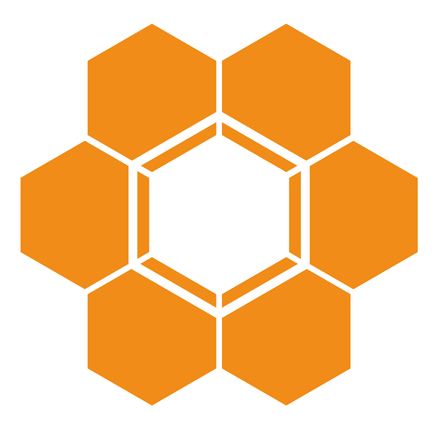

ODM API Documentation
Overview
Doc
Contacts
API Documentation
0.7.x/
arrow_drop_down
blueprint-server-redoc-static.html
devops-server-redoc-static.html
registry-server-redoc-static.html
0.8.x/
arrow_drop_down
blueprint-server-redoc-static.html
devops-server-redoc-static.html
registry-server-redoc-static.html
1.0.0-DRAFT/
arrow_drop_down
blueprint-server-redoc-static.html
devops-server-redoc-static.html
registry-server-redoc-static.html